Subnetting and Maintaining Multiple LANs
Planning and Design
Initial Subnet Consideration
Questions were answered to examine how subnet masks affect network assignment.
What must be true for two IP addresses with the subnet mask 255.0.0.0 to be on the same network?
They have the same first part of their IP addresses.
What must be true for two IP addresses with the subnet mask 255.255.0.0 to be on the same network?
They have the same first two parts of their IP addresses.
Given the IP address 210.58.24.55 and subnet mask 255.255.255.0, what is the structure of the other IP addresses on the network?
210.58.24.X
Not all subnet masks use 0s and 255s (e.g. 240, 128, 224, 252, 254). What is the pattern in these numbers?
In their binary representations, they have all 1s, then all 0s after a certain point.
- 240 = 11110000
- 128 = 10000000
- 224 = 11100000
- 252 = 11111100
- 254 = 11111110
What do all valid subnet masks have in common?
In their binary representations, there must be all 1s to start, then all 0s after a certain point.
Technical Development
Determining Networks Using IPv4 Addresses and Subnet Masks
In this activity, subnet masks were varied on different computers to test communication between devices.
Building the Network
A basic network was created with three PCs under one switch, with all connections being wired. Next, the three PCs were assigned the following IP addresses under the same subnet mask (255.255.255.0):
- PC0 -> 192.168.1.10
- PC1 -> 192.168.1.25
- PC2 -> 192.168.2.10
Investigating Communication
Using the command prompt on PC0, PC0 attempted to ping PC1 (192.168.1.25):
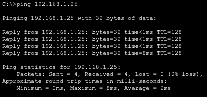
As shown above, this ping was successful.
Next, PC0 attempted to ping PC2 (192,168.2.10):
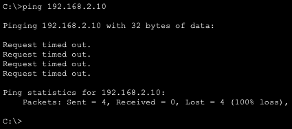
This ping failed, as none of the packets went through.
The determining factor of whether the ping worked was the subnet mask. Since the subnet mask is 255.255.255.0, the first three segments of the IP address determine whether devices are on the same subnet. Since the third segment of PC2 differs from that of PC1 and PC2, it is on a different subnet, so direct communication fails.
Modifying and Testing Again
PC2's subnet mask was changed from 255.255.255.0 to 255.255.0.0. Then, 192.168.2.10 (PC2) was pinged again from PC0:
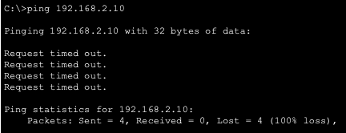
This ping attempt still failed. This is because while PC2's subnet mask classifies it and PC0 being on the same subnet, PC0's subnet mask is still 255.255.255.0. Thus, from PC0, PC2 is on a different subnet, so communication is still expected to fail.
Structured Investigation
Scenario A:
- All subnet masks are changed to 255.0.0.0.
After the subnet masks were changed, PC0 pinged both PC1 and PC2:
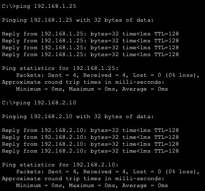
Both of the ping attempts succeeded. This happened because the subnet mask only specifies that the first segment of the devices' IPv4 addresses must be the same to be on the same subnet. Since all PCs have a first segment of 1, communication is expected to succeed.
Scenario B:
- PC0 -> 172.16.1.10 / 255.255.0.0
- PC1 -> 172.16.2.20 / 255.255.0.0
Communication from PC0 to PC1 was tested by PC0 pinging PC1:
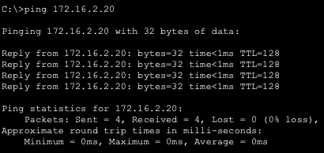
The ping attempt succeeded.
These devices are on the same network because their subnet masks are both 255.255.0.0, so their subnet is defined by the first two segments of their IPv4 addresses. Since both PCs have first segments of 172.16, they are on the same network and should communicate correctly.
Scenario C-1:
- Two PCs look "similar" but are not on the same network
The following assignments were chosen:
- PC0 -> 172.16.1.10 / 255.255.255.192
- PC1 -> 172.16.1.120 / 255.255.255.192
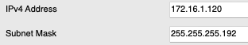
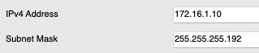
Next, PC0 attempted to ping PC1 (172.16.1.120):
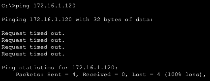
The ping failed.
Although both PCs have the same first three segments, the subnet mask makes it so that parts of the fourth segment also matter for the devices to be on the same subnet. Thus, they are actually on different subnets.
Scenario C-2:
- Two PCs look "different" but are on the same network
The following assignments were chosen:
- PC0 -> 172.45.13.132 / 255.0.0.0
- PC1 -> 172.16.1.120 / 255.0.0.0
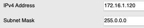
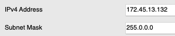
Next, PC0 attempted to ping PC1 (172.16.1.120):
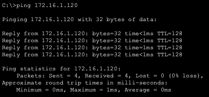
The ping succeeded. This happened because the subnet mask only specifies that the first segments of the IP addresses must be the same to be on the same network, so the devices are actually on the same network.
Designing a Real Network
In this activity, a network for a small business workspace was designed with the following features:
- Front Office Staff (wired desktop computers)
- Remote/Moving Staff (wireless laptops)
- Central File Storage System
- Internet Access
Physical Design
Cisco Packet Tracer was used to design this network. The devices were named accordingly, and the devices were placed based on their function:
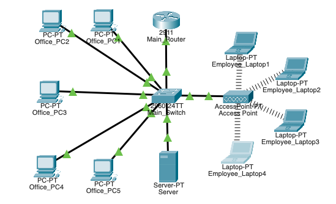
Required Devices
A router was required since the employees must connect to the internet, and a router allows local information to be transmitted globally. A switch is also necessary to connect the wired devices. For the wireless devices, such as laptops, an access point is also required. A server device is also helpful to store the company's shared files.
Final Network Configuration
The only devices which should be connected wirelessly are the laptops to the access point. Thus, the following connections were made:
Making Separate Networks Communicate
Physical Setup
First, two LANs were created, and a router was placed between the two switches:
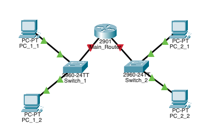
Configuration
As shown above, the connections to the router are DOWN. To fix this, the router's terminal was used to assign IP addresses (192.168.1.1 and 192.168.2.1) to the switches and to enable the connections:
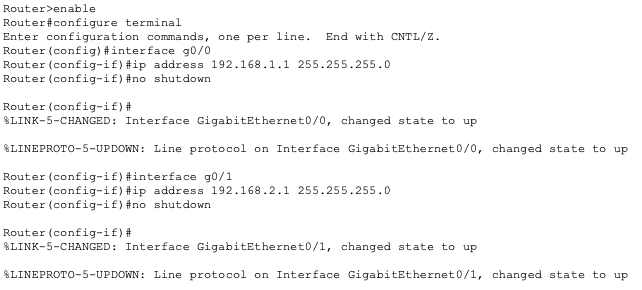
Shown below are the active connections:
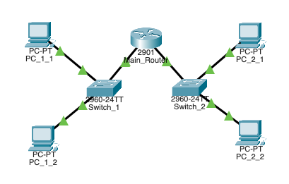
Next, the PCs were configured to match the router settings.
On each of the computers, an IPv4 address under the gateway of their respective switch and the gateway address assigned to the switch were assigned. Below are the IP configurations for computers on switches 1 and 2 respectively:
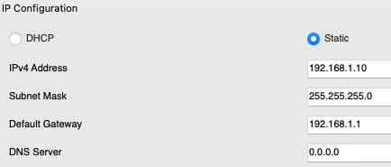
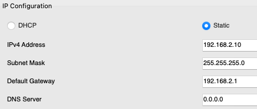
When Networks Break: Diagnosing and Fixing Problems
In this activity, a broken network was examined, the problem was diagnosed, and a solution was made.
Initial Observations
To start, the network topology was examined:
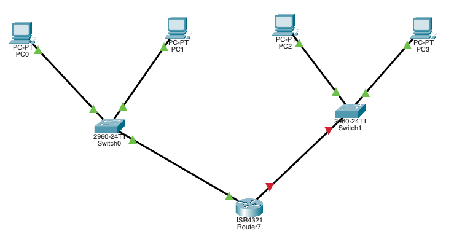
As seen above, the connection between the router and Switch1 seemed to be down, but there may also be hidden connection failures. To check for these, ping was used.
To confirm that ping was working, PC0 pinged PC1 (on the same switch), which was expected to work:
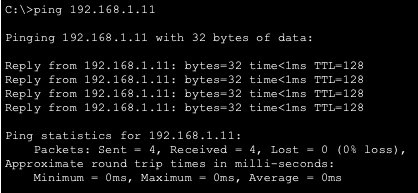
Since this worked, there is not a problem with the ping command.
Next, a PC under the other router and the other router itself were pinged to check for problems communicating with that subnet:
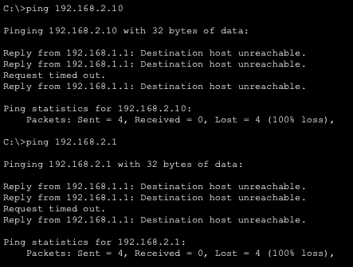
Both of these failed, implying that there is likely a connection failure connected to Switch1, which supports what was deduced from the topology.
Finally, pings were made from PC2 on the other subnet to diagnose exactly where the problem is:
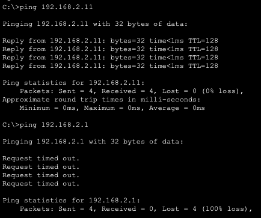
Communication with the other device on the same subnet worked, meaning that Switch1 is configured correctly. However, the ping to the switch itself failed, suggesting that there is a problem with the IP address assigned by the router. Thus, there must be a problem between the router and Switch1.
The configs of the GigabitEthernet ports of the router were then checked to see any disparity between the switch configurations:
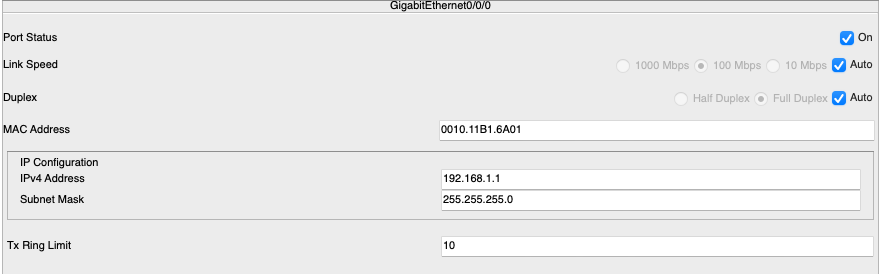
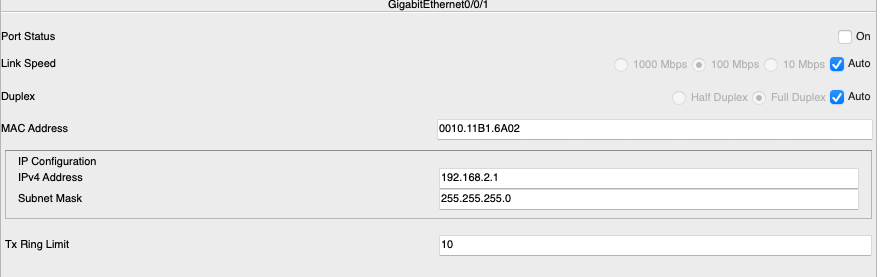
The only notable difference is that the port status for GigabitEthernet0/0/1 (Switch1) is off. This is the problem in the network.
Fixing the Problem
To fix this, the router's CLI was opened, and GigabitEthernet0/0/1 was opened. Next, the command no shutdown was entered to activate the connection:
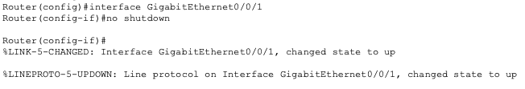
Checking the status can be found in Testing and Evaluation.
Testing and Evaluation
Determining Networks Using IPv4 Addresses and Subnet Masks
Explanation
A device determines whether another device is on the same network based on its subnet mask and the other device's subnet mask. The subnet mask determines how many of the first segments of the IPv4 addresses of two devices must be the same for them to be in the same network, with a 255 in the subnet mask corresponding to that segment identifying the respective subnet. A notable case where two IP addresses look similar but are not on the same network is scenario C-1, where the PCs have the same first three segments in their IP address, but their subnet mask specifies that part of the fourth segment must also be identical. A case where two IP addresses look different but are on the same network is scenario C-2, where the PCs only have the same first segment, but the subnet mask only specifies that the first segment must be identical for devices to be on the same subnet. A router is required when devices are on different network since a router is designed to facilitate communication between networks via global IP addresses. Since switches are restricted to local IP addresses, a router is required to bridge different subnets.
Designing a Real Network
Explanation
The router was selected as the central device because it allows communication between switches and internet access. The router was connected via a wired connection to the switch, which allows the devices to communicate. From there, the PCs were connected with wires to the switch to allow the front-desk employees to communicate with each other. The server device was also connected to the switch to allow access to it from all employee devices. An access point was connected with wires to the switch to allow for wireless devices to connect, and the laptops were connected wirelessly to the access point since they are able to be moved around. Overall, a client-server model was chosen since it is helpful for businesses to have a centralized way to store and access information.
Making Separate Networks Communicate
Testing
Next, a computer under switch 1 pinged a computer under switch 2, which both have different default gateways:
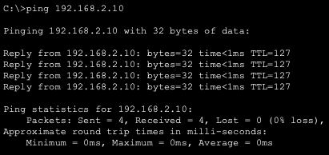
The ping succeeds, implying successful communication across the router.
The router connects networks by assigning a different gateway to each switch under it, and the devices under those switches are assigned IP addresses according to their respective gateway addresses. This is supported by the PC under switch 2 being assigned a different local IP address than the PC under switch 1 during the ping process. Router interfaces are used to specify which switches are able to connect and how local addressing should be handled under that router. The default gateway specifies what local IP addresses can communicate with a switch.
When Networks Break: Diagnosing and Fixing Problems
Checking Status Afterwards
When checking the config of GigabitEthernet0/0/1, the port status was set to On, implying that the problem was fixed:
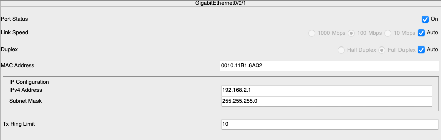
The part of the topology which was previously red also turned green, showing that the connection is UP:
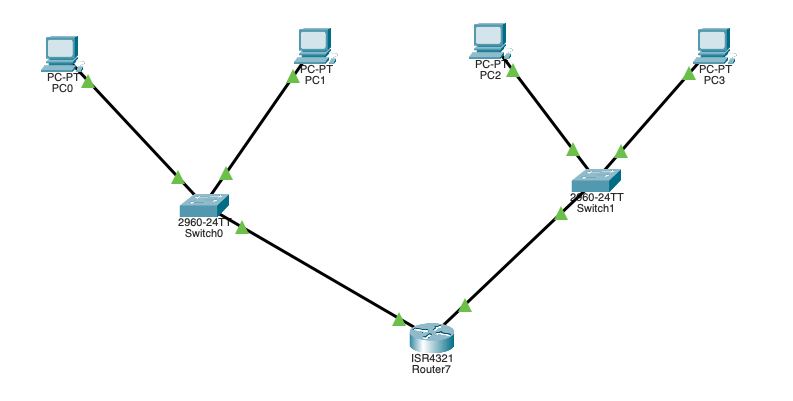
Finally, ping was run again from PC0 to the other subnet's switch and PC3:
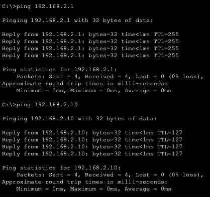
Since these pings were successful, the network was successfully fixed.
Solution Explanation
Through checking ping, router configurations, and the network topology visualization, the problem was diagnosed to be between the router and Switch1. ping especially supported this, as communication was only possible up to the point between the router and Switch1 from a device on Switch0. To look for a solution, differences in switch configuration were checked, since Switch0 was successfully connected and was a good benchmark to compare to. The problem was found to be that the status of the port connected to Switch1 was OFF. To fix this, the CLI of the router was used to run the no shutdown command, which activates a port. After this fix, any ping run successfully worked, and the network topology showed a green connection between the router and Switch1, confirming that the problem was fixed.
Reflection
Through the Subnetting and Maintaining Multiple LANs activity, the interaction between IPv4 addressing, subnet masks, and network communication was explored, showing how logical segmentation determines whether devices can communicate. Subnet masks were examined in both decimal and binary forms, revealing that valid masks consist of contiguous 1s followed by 0s, which define the boundary between network and host portions of an address. Testing with ping commands demonstrated that successful communication depends on devices sharing consistent subnet interpretations, as mismatched masks can prevent connectivity even when IP addresses appear similar. Multiple scenarios highlighted how expanding or narrowing subnet masks changes network scope, reinforcing subnetting as a tool for efficient IP management and traffic control. Designing a small business network further illustrated how routers, switches, access points, and servers each serve distinct roles in enabling both wired and wireless communication within a structured environment. The importance of routers was emphasized when connecting separate LANs, as default gateways and router interfaces allowed devices on different subnets to exchange data reliably. Troubleshooting exercises showed how systematic testing with ping and configuration checks can isolate issues, such as identifying a disabled router interface. Fixing this issue using the no shutdown command demonstrated how minor misconfigurations can disrupt entire networks and how they can be resolved through careful analysis. Overall, the activity reinforced the importance of consistent configuration, thoughtful network design, and effective troubleshooting in maintaining reliable communication. Citations include the Charlotte Latin School AP Networking Class assignments.